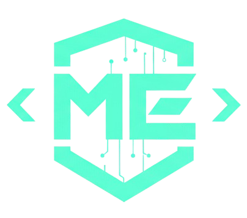

<Cybersecurity Engineering Student at ENSA Marrakech />

MOURAD
MOURAD
EL OUATIK
|
Securing the cloud, one pipeline at a time. Specialized in DevSecOps automation, cloud security architecture, and real-time threat detection.
0
Security Projects
0
Certifications
0
Events/Day Analyzed
0
Leadership Roles
SYSTEM STATUS: ACTIVE
SCANNING FOR OPPORTUNITIES...
Available for PFA Internship
(1-2 months)
Focus Areas